10Serie storiche II: smoothing esponenziale e famiglia ETS
10.1 Obiettivi del capitolo
Al termine del capitolo dovresti essere in grado di:
descrivere il framework generale di previsione parametrica \(f(t;\theta)\) e collocarvi via via SES, Holt, Holt con trend smorzato e Holt-Winters come casi via via più ricchi;
spiegare perché lo smoothing esponenziale semplice equivale a una media pesata delle osservazioni passate con decadimento geometrico, e interpretare correttamente i casi limite \(\alpha=0\) e \(\alpha=1\);
riscrivere un modello di smoothing esponenziale nella notazione ETS (stato/osservazione, errore additivo o moltiplicativo) e classificare un modello dato secondo la sigla Error-Trend-Seasonal;
distinguere la stagionalità fissa della decomposizione classica (capitolo 9) dalla stagionalità adattiva di Holt-Winters, spiegandone le implicazioni pratiche;
usare AIC/BIC per confrontare modelli ETS alternativi e leggere criticamente un intervallo di previsione, parametrico o bootstrap, riconoscendone le assunzioni sottostanti;
spiegare perché il bootstrap per serie storiche va applicato solo ai residui e mai alla serie grezza, collegando questa scelta al concetto di bootstrap/bagging incontrato in altri capitoli.
10.2 Il problema della previsione parametrica
10.2.1 Motivazione
Nel capitolo precedente abbiamo incontrato metodi di previsione elementari — naive, media, naive stagionale, drift — che non hanno praticamente nulla da “imparare” dai dati: al più stimano una pendenza globale (il drift), ma non esiste un procedimento di ottimizzazione vero e proprio. Questi metodi sono un’ottima base di confronto, ma sono anche piuttosto rigidi: non si adattano al fatto che alcune osservazioni recenti potrebbero essere più informative di altre, né imparano quanto “fidarsi” del passato più remoto.
Il passo naturale, esattamente come è successo passando da KNN a OLS in regressione, è introdurre modelli parametrici: famiglie di funzioni indicizzate da un numero piccolo di parametri, che vengono stimati sui dati minimizzando un errore. I modelli di questo capitolo — SES, Holt, Holt con trend smorzato, Holt-Winters — hanno tipicamente da uno a quattro parametri. Sono quindi, come si dice spesso a lezione, un “giusto bilanciamento tra complessità del modello e rendimento”: pochi parametri, facili da stimare, eppure spesso più efficaci dei metodi elementari della lezione precedente.
10.2.2 Concetto e definizione
ImportantDefinizione
Data una serie storica osservata \((y_t)_{t=1,\ldots,T}\), un modello di previsione parametrico è una famiglia di funzioni \[
f(t;\theta), \qquad \theta \in \mathbb{R}^p,
\] insieme a una procedura per:
stimare i parametri sui dati osservati, ottenendo \(\hat\theta\) tale che \(f(t;\hat\theta) \approx y_t\) per \(t=1,\ldots,T\);
prevedere valori futuri: \(\hat y_{T+h|T} = f(T+h;\hat\theta)\), dove \(h\) è l’orizzonte di previsione (il simbolo tradizionalmente riservato ai parametri, qui indicato con \(\theta\), va tenuto distinto da \(h\) proprio per questo motivo);
quantificare l’incertezza della previsione tramite un intervallo di previsione.
Il punto 3 non va considerato un accessorio. Una previsione puntuale senza nessuna indicazione di incertezza comunica un falso senso di precisione: dire “il prossimo mese le vendite saranno 105” è molto meno onesto e meno utile di dire “ci aspettiamo un valore tra 90 e 120, con centro attorno a 105”. Buona parte del capitolo, dopo aver introdotto i modelli, sarà dedicata proprio a come costruire questi intervalli.
Un dettaglio importante sulla stima: i parametri \(\hat\theta\) vengono stimati usando tutta la storia disponibile fino al tempo \(t\) da cui si parte a prevedere. Se si è tenuta da parte una porzione di serie come test set (come faremo sistematicamente in questo capitolo), la stima avviene solo sul training set; una volta scelto il modello migliore, nella pratica si può poi ristimare sull’intera serie per ottenere le previsioni operative.
10.2.3 Domande di comprensione
In che senso i metodi naive, media e drift del capitolo precedente sono “modelli parametrici” degeneri, con zero o un solo parametro?
Perché non basta riportare una previsione puntuale senza un intervallo di incertezza? Fai un esempio concreto in cui l’assenza di un intervallo potrebbe portare a una decisione sbagliata.
Cosa cambierebbe, concettualmente, se stimassimo \(\hat\theta\) usando anche le osservazioni del test set?
10.3 Smoothing esponenziale semplice (SES)
10.3.1 Motivazione
Il modello più semplice possibile che non sia completamente banale ha un solo parametro. L’idea è: invece di usare solo l’ultima osservazione (naive) o la media di tutte le osservazioni passate (media), troviamo un compromesso — una media pesata in cui le osservazioni più recenti contano di più, ma quelle passate non vengono buttate via del tutto.
10.3.2 Concetto e definizione
ImportantDefinizione
Il modello di smoothing esponenziale semplice (simple exponential smoothing, SES) ha un unico parametro \(\alpha \in [0,1]\). Definisce un livello\(\ell_t\) tramite la ricorsione \[
\ell_t := \alpha y_t + (1-\alpha)\ell_{t-1},
\] e produce la previsione \[
\hat y_{t+h|t} = \ell_t \qquad \text{per ogni } h \geq 1.
\]
Si noti subito una caratteristica del modello: la previsione non dipende da\(h\). Che si preveda un mese o dieci anni nel futuro, SES fornisce sempre lo stesso numero: l’ultimo livello stimato. È il prezzo da pagare per la sua semplicità, e sarà proprio questa rigidità a motivare i modelli successivi.
10.3.3 Intuizione
Il livello \(\ell_t\) è una media pesata tra il valore osservato più recente e il livello precedente, che a sua volta incorpora (ricorsivamente) tutto il passato. Srotolando la ricorsione si ottiene la formula esplicita \[
\ell_t = \alpha y_t + \alpha(1-\alpha) y_{t-1} + \alpha(1-\alpha)^2 y_{t-2} + \alpha(1-\alpha)^3 y_{t-3} + \cdots
\] Il peso di un’osservazione a ritardo \(k\) è \(\alpha(1-\alpha)^k\): decresce geometricamente (cioè esponenzialmente) al crescere di \(k\), perché \((1-\alpha) < 1\). È esattamente questo il motivo del nome “esponenziale”: non c’è nulla di esponenziale nell’andamento della serie, ma nel modo in cui il peso delle osservazioni passate si spegne.
Consideriamo i due casi limite:
\(\alpha = 1\): il livello diventa \(\ell_t = y_t\), cioè si ignora completamente il passato. La previsione coincide con il metodo naive della lezione precedente.
\(\alpha = 0\): il livello resta bloccato al suo valore iniziale, cioè, in pratica, alla prima osservazione. Un modello del genere non impara nulla dai dati successivi ed è di scarsa utilità pratica.
Il valore utile di \(\alpha\) è quasi sempre un compromesso strettamente compreso tra 0 e 1, ed è proprio per questo che ha senso stimarlo dai dati anziché fissarlo a mano, come vedremo tra poco.
TipApprofondimento: smorzamento o lisciamento?
Il termine inglese smoothing viene spesso tradotto in italiano come “smorzamento esponenziale”, ma la traduzione più fedele sarebbe lisciamento: mediando ripetutamente le osservazioni passate, la serie ottenuta risulta più regolare (“liscia”) della serie originale, perché le oscillazioni casuali tendono a compensarsi. “Smorzamento” non è del tutto sbagliato come immagine, ma nel seguito del capitolo incontreremo anche il damping del trend (letteralmente, smorzamento del trend in Holt), un concetto diverso che in italiano viene spesso tradotto con la stessa parola. Conviene tenere a mente questa ambiguità terminologica per non confondere i due fenomeni: uno è la regolarizzazione della serie tramite media pesata, l’altro è l’attenuazione di una tendenza lineare a orizzonti lunghi.
10.3.4 Esempio
Usiamo la serie nottem (temperature medie mensili a Nottingham, già incontrata nel capitolo precedente), tenendo da parte gli ultimi due anni come test set.
library(forecast)library(ggplot2)nottem_train <-window(nottem, end =c(1937, 12))nottem_test <-window(nottem, start =c(1938, 1))fit_ses_05 <-ses(nottem_train, h =24, alpha =0.5, initial ="simple")autoplot(nottem_train) +ggtitle("SES con alpha = 0.5, serie nottem") +autolayer(nottem_test) +autolayer(fit_ses_05, PI =FALSE, colour ="blue") +theme(legend.position ="none")
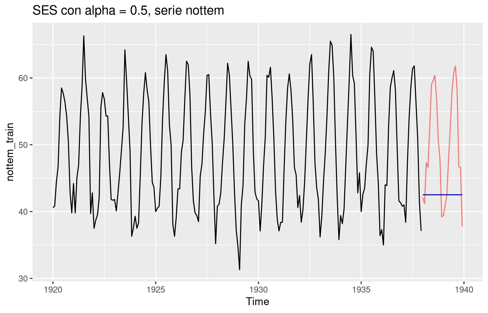
Prima di calcolare. Se ora rifacessimo lo stesso grafico con \(\alpha = 1\) invece di \(0.5\), che tipo di curva ti aspetti? Sarà più o meno reattiva alle ultime osservazioni rispetto al caso \(\alpha=0.5\)?
fit_ses_1 <-ses(nottem_train, h =24, alpha =1, initial ="simple")autoplot(nottem_train) +ggtitle("SES con alpha = 1 (equivalente al naive), serie nottem") +autolayer(nottem_test) +autolayer(fit_ses_1, PI =FALSE, colour ="blue") +theme(legend.position ="none")
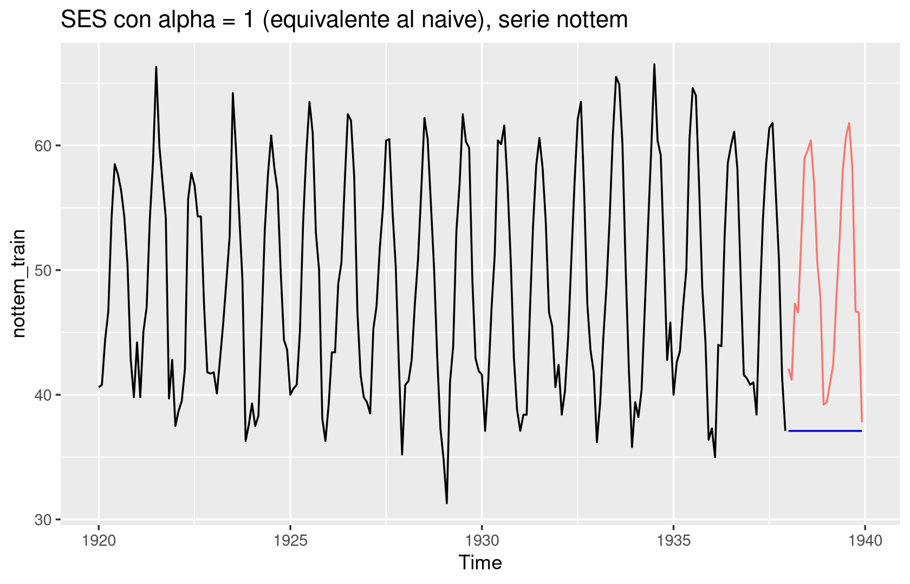
10.3.5 Interpretazione
Con \(\alpha = 0.5\) la previsione è una costante piatta, uguale all’ultimo livello stimato: SES non riesce a catturare l’oscillazione stagionale (temperature che salgono e scendono nel corso dell’anno), perché per costruzione non ha nessuna componente periodica. Con \(\alpha=1\) la previsione coincide con il valore dell’ultima osservazione portato avanti — di nuovo una costante, ma “agganciata” al dato più recente anziché a una media. In entrambi i casi, il modello non fa altro che dire “da qui in avanti resteremo circa a questo livello”: è un modello ragionevole se la serie oscilla attorno a un livello stabile senza trend né stagionalità marcati, ma qui la stagionalità è fortissima (le temperature invernali ed estive sono molto diverse), e il grafico lo rende evidente.
10.3.6 Limiti
WarningAttenzione
SES non modella né il trend né la stagionalità: la previsione è sempre costante rispetto a \(h\). Su una serie con una tendenza chiara o un ciclo stagionale marcato, SES è sistematicamente inadeguato per orizzonti che superano pochi passi. È un ottimo punto di partenza pedagogico e un buon termine di paragone, ma raramente il modello finale in un’applicazione reale.
10.3.7 Domande di comprensione
Perché la previsione di SES non dipende dall’orizzonte \(h\)? Che tipo di andamento della serie ti aspetteresti in una serie in cui SES funziona particolarmente bene?
Se stimassi \(\alpha\) su una serie completamente casuale (rumore bianco, senza nessuna struttura), che valore ti aspetteresti approssimativamente? Perché?
Un collega sostiene che “il modello naive è un caso speciale del modello di media aritmetica”. È corretto rispetto a SES? Motiva la risposta guardando i due casi limite \(\alpha=0,1\).
10.4 La notazione ETS: stato nascosto e osservazione rumorosa
10.4.1 Motivazione
Man mano che aggiungeremo trend e stagionalità, le equazioni dei modelli diventeranno via via più complesse e rischiano di apparire come una “selva” di formule slegate tra loro. Per mettere ordine, si introduce una notazione comune — ETS, da Error/Trend/Seasonal — che riscrive ogni modello in termini di un errore (residuo) esplicito, di un livello che si evolve nel tempo, e (quando presenti) di un trend e di una stagionalità. Vediamo come funziona partendo dal caso più semplice, SES.
10.4.2 Concetto e definizione
Dato un modello predittivo qualunque, definiamo il residuo (o errore) a orizzonte \(h\) e il residuo a un passo come \[
\varepsilon_{t+h|t} := y_{t+h} - \hat y_{t+h|t}, \qquad \varepsilon_t := y_t - \hat y_{t|t-1}.
\] Nel seguito useremo quasi sempre la seconda forma: la differenza tra il valore osservato al tempo \(t\) e la previsione fatta un passo prima, conoscendo la serie solo fino a \(t-1\).
Per SES, ricordando che \(\hat y_{t|t-1} = \ell_{t-1}\), la definizione di \(\ell_t\) si riscrive algebricamente raccogliendo \(\alpha\): \[
\ell_t = \alpha y_t + (1-\alpha)\ell_{t-1} = \ell_{t-1} + \alpha(y_t - \ell_{t-1}) = \ell_{t-1} + \alpha \varepsilon_t.
\]
ImportantDefinizione
Il modello SES, riscritto in notazione ETS(A,N,N) (errore Additivo, Nessun trend, Nessuna stagionalità), è dato dalla coppia di equazioni \[
\begin{cases}
\ell_t = \ell_{t-1} + \alpha \varepsilon_t & \text{(equazione di stato/transizione)} \\
y_t = \ell_{t-1} + \varepsilon_t & \text{(equazione di osservazione/misurazione)}
\end{cases}
\]
10.4.3 Intuizione
Questa riscrittura sembra solo un gioco algebrico, ma introduce un cambio di prospettiva utile. Nel punto di vista “diretto” (quello con cui abbiamo introdotto SES), \(\ell_t\) era semplicemente una quantità ausiliaria usata per calcolare la previsione. Nel punto di vista ETS, la logica si ribalta: si pensa al livello \(\ell_t\) come a uno stato nascosto, una versione “ideale” della serie che vorremmo davvero osservare; quello che osserviamo realmente, \(y_t\), è soltanto una versione rumorosa di quello stato, cioè lo stato più un errore. Lo stato stesso evolve nel tempo aggiornandosi con una frazione \(\alpha\) dell’errore appena commesso.
Questo è un punto di vista tipico dei modelli state-space (spazio degli stati): esiste un processo “vero” che non osserviamo direttamente, e i dati sono osservazioni rumorose di quel processo. La stessa idea, resa più formale e generale, ricomparirà nel capitolo 11 quando parleremo di processi stocastici sottostanti a una serie osservata.
10.4.4 Concetto: la versione moltiplicativa
Se la struttura della serie è di tipo moltiplicativo (ampiezza delle oscillazioni proporzionale al livello, come nella decomposizione moltiplicativa del capitolo 9), possiamo ottenere una variante del modello usando errori relativi invece di errori assoluti: \[
\varepsilon_t := \frac{y_t - \hat y_{t|t-1}}{\hat y_{t|t-1}}.
\]
ImportantDefinizione
Il modello ETS(M,N,N) è \[
\begin{cases}
\ell_t = \ell_{t-1}(1+\alpha \varepsilon_t) \\
y_t = \ell_{t-1}(1+\varepsilon_t)
\end{cases}
\]
Questa è un’alternativa esplicita al passaggio al logaritmo (che avevamo incontrato nel capitolo 9 per “linearizzare” una serie moltiplicativa): il logaritmo e la formulazione con errori relativi sono strettamente imparentati ma non identici. Il vantaggio pratico della versione moltiplicativa è che si lavora direttamente sulla scala originale della serie, evitando di dover ritrasformare le previsioni con un esponenziale.
10.4.5 Domande di comprensione
Nella notazione ETS(A,N,N), spiega a parole cosa rappresenta ciascuna delle due equazioni (stato e osservazione), e in che modo differiscono tra loro.
Perché la riscrittura in termini di residui è utile anche se, per SES, non aggiunge informazione matematica rispetto alle equazioni originali?
In che senso il punto di vista ETS “ribalta” quello con cui abbiamo introdotto SES all’inizio del capitolo?
10.5 Stima dei parametri: SSE, non linearità e ottimizzazione numerica
10.5.1 Motivazione
Finora abbiamo scelto \(\alpha\) a mano (0.5, poi 1) solo per illustrare il comportamento del modello. Nella pratica vogliamo che sia il modello a scegliere il valore di \(\alpha\) più adatto ai dati, esattamente come in regressione lasciamo che siano i dati a determinare i coefficienti.
10.5.2 Concetto
L’ipotesi statistica di lavoro è che gli errori \((\varepsilon_t)_t\) siano variabili aleatorie i.i.d. \(\mathcal N(0,\sigma^2)\). Sotto questa ipotesi, lo stimatore naturale è quello dei minimi quadrati (SSE, sum of squared errors): \[
\theta_{SSE} \in \arg\min_{\theta} \sum_{t=1}^T (y_t - \hat y_{t|t-1})^2.
\] È esattamente lo stesso criterio usato per la regressione OLS nei capitoli 6-7.
WarningAttenzione
A differenza della regressione lineare, qui non esiste una formula chiusa per \(\theta_{SSE}\). Per SES, \(\hat y_{t|t-1} = \ell_{t-1}\) dipende da \(\alpha\) in modo non lineare (basta guardare la formula esplicita con i pesi \(\alpha(1-\alpha)^k\)): non possiamo quindi risolvere l’equazione delle derivate prime in forma chiusa come facevamo per OLS. La stima richiede metodi numerici di ottimizzazione, che è esattamente ciò che fanno internamente le funzioni R che useremo (ses, holt, hw, ets). Non esiste, in generale, una formula esplicita per i parametri ottimali dei modelli di smoothing esponenziale.
10.5.3 Esempio
Lasciamo che R stimi \(\alpha\) automaticamente su quattro serie diverse.
I quattro risultati raccontano una storia istruttiva. Su nottem e sul DAX, la stima restituisce \(\hat\alpha=1\): nonostante avessimo introdotto un parametro proprio per rendere il modello più flessibile del naive, i minimi quadrati “ci riportano” al metodo naive. Non è un errore: significa semplicemente che, per queste serie e in questa finestra, la scelta che minimizza l’errore quadratico a un passo è affidarsi interamente all’ultima osservazione — il livello aggiuntivo di media pesata non aiuta. Su AirPassengers in scala originale l’algoritmo trova un valore intermedio, mentre sulla serie log-differenziata trova \(\hat\alpha \approx 0\): un comportamento opposto, in cui il modello preferisce una lunga memoria (una media su gran parte del passato) piuttosto che inseguire l’ultima osservazione. Il confronto mostra bene quanto possa variare l’output di uno stesso modello a seconda della serie e della trasformazione applicata: non esiste un valore di \(\alpha\) “tipico” da aspettarsi a priori.
NoteCome leggere il risultato
\(\hat\alpha=1\) non significa che SES abbia “fallito”: significa che, con un solo parametro a disposizione e nessuna componente di trend o stagionalità, la scelta ottimale nel senso dei minimi quadrati coincide con il naive. È un segnale diagnostico utile: se SES collassa sistematicamente nel naive, probabilmente la serie ha una struttura (trend, stagionalità, autocorrelazione a breve termine) che un modello a un solo parametro non può catturare, e conviene passare a un modello più ricco come quelli che vedremo tra poco.
10.5.5 Domande di comprensione
Perché, a differenza della regressione lineare semplice, la stima di \(\alpha\) in SES richiede metodi numerici e non una formula chiusa?
Cosa significa, in pratica, che \(\hat\alpha = 1\) risulti “ottimale” per i minimi quadrati su una data serie? È una buona notizia o un cattivo segnale sulla scelta del modello?
Il fatto che \(\hat\alpha\) vari così tanto tra le quattro serie dell’esempio (da 0 a 1) cosa ti suggerisce sull’idea di fissare \(\alpha\) “a occhio” invece di stimarlo?
10.6 Il modello di Holt: aggiungere il trend
10.6.1 Motivazione
SES non coglie né trend né stagionalità. Il primo miglioramento naturale è aggiungere una componente di trend: una pendenza stimata dai dati, che permetta alla previsione di crescere o decrescere linearmente nel tempo invece di restare costante.
TipUn po’ di storia
L’idea risale al lavoro di Charles Holt, pubblicato negli anni ’50 del Novecento. Non è quindi un’idea recente, eppure i modelli di questa famiglia continuano a comportarsi bene anche oggi, spesso alla pari con metodi molto più sofisticati.
10.6.2 Concetto e definizione
ImportantDefinizione
Il modello di Holt introduce, oltre al livello \(\ell_t\), una pendenza (trend) \(b_t\), con parametri di smoothing \(\alpha,\beta \in [0,1]\): \[
\begin{aligned}
\hat y_{t+h|t} &:= \ell_t + h\, b_t & \text{(previsione)} \\
\ell_t &:= \alpha y_t + (1-\alpha)(\ell_{t-1} + b_{t-1}) & \text{(livello)} \\
b_t &:= \beta(\ell_t - \ell_{t-1}) + (1-\beta) b_{t-1} & \text{(trend)}
\end{aligned}
\] Notazione: ETS(A,A,N). I parametri \(\alpha,\beta\) sono stimati tramite SSE.
L’equazione del livello è quasi identica a SES, con una differenza cruciale: invece di confrontare \(y_t\) con il solo \(\ell_{t-1}\), lo confrontiamo con \(\ell_{t-1}+b_{t-1}\), cioè con la previsione che il modello avrebbe fatto un passo prima tenendo conto anche del trend. L’equazione del trend fa un’operazione analoga a quella del livello, ma applicata alla “velocità di crescita”: mescola la variazione più recente del livello, \(\ell_t-\ell_{t-1}\), con il trend stimato in precedenza.
10.6.3 Esempio
Usiamo la serie BJsales (vendite mensili di un’azienda, una serie economica, moderatamente rumorosa ma meno delle serie finanziarie).
autoplot(bj_train, ylab =NULL) +ggtitle("Modello di Holt, serie BJsales") +autolayer(bj_test) +autolayer(fit_holt, PI =FALSE, colour ="blue") +theme(legend.position ="none")
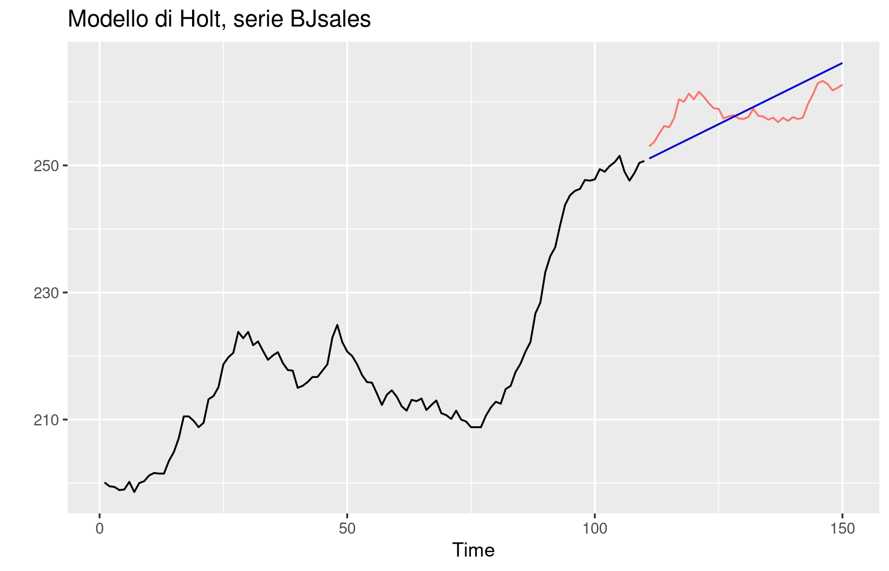
Il modello stima \(\hat\alpha=1\) (di nuovo un comportamento “naive” per il livello) ma \(\hat\beta \approx 0.25\): la pendenza viene mediata tra il trend più recente e quelli passati, invece di essere presa “di getto” dall’ultimo incremento osservato. Su questa finestra la previsione sembra ragionevole.
Prima di calcolare. Ecco però lo stesso identico modello, applicato a un’altra finestra temporale della stessa serie BJsales — una finestra scelta apposta perché mostra un periodo di crescita sostenuta delle vendite, seguito (nel test set) da un rallentamento. Prima di eseguire il codice: cosa ti aspetti che preveda il modello di Holt in questa situazione? La crescita continuerà indefinitamente nella previsione, oppure il modello “capirà” che il ritmo sta per cambiare?
bj_train2 <-window(BJsales, end =94)bj_test2 <-window(BJsales, start =95)fit_holt2 <-holt(bj_train2, damped =FALSE, h =40, alpha =NULL, beta =NULL)autoplot(bj_train2, ylab =NULL) +ggtitle("Modello di Holt, seconda finestra BJsales (periodo di forte crescita)") +autolayer(bj_test2) +autolayer(fit_holt2, PI =FALSE, colour ="blue") +theme(legend.position ="none")
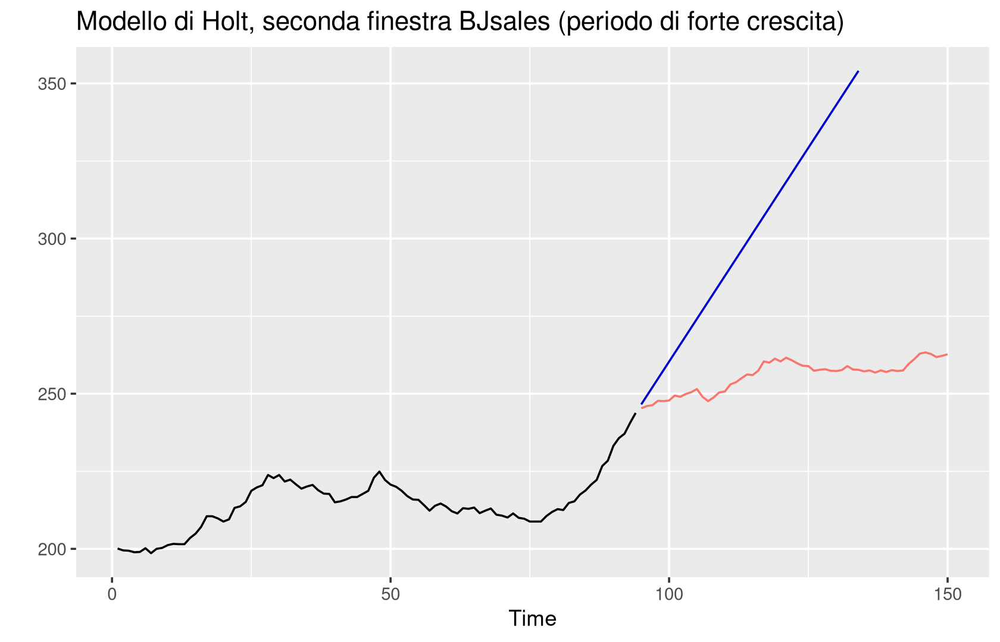
Dopo il calcolo. Il modello di Holt, avendo osservato una lunga sequenza di incrementi positivi, estrapola una retta con la stessa pendenza all’infinito: prevede una crescita fortissima e sostenuta, mentre la serie vera (in rosso nel test set) rallenta e si stabilizza. La tua previsione coincideva con questo comportamento? Se no, in cosa differiva?
10.6.4 Interpretazione
Questo secondo esempio non è casuale: è stato scelto deliberatamente per mostrare un difetto sistematico del modello di Holt. Il primo esempio (finestra fino a 110) era in un certo senso di “comodo”: la previsione appariva sensata. Ma se ci si posiziona in un momento di euforia — molte osservazioni consecutive in crescita — Holt continua semplicemente a proiettare in avanti l’ultima traiettoria osservata, per quanti passi la si voglia estendere. Il modello, si potrebbe dire, è “troppo eccitabile”: prende l’ultimo incremento e “parte per la tangente”, senza alcun meccanismo che lo trattenga.
10.6.5 Limiti
WarningAttenzione
Il modello di Holt tende a sovrastimare sistematicamente le previsioni a orizzonti lunghi quando il trend osservato di recente è forte, perché la componente di trend è lineare e non smorzata: cresce (o decresce) senza limite al crescere di \(h\). Questo è probabilmente l’avvertimento più importante di questo capitolo: un modello che sembra funzionare bene su una finestra temporale può comportarsi molto peggio su un’altra finestra della stessa identica serie, semplicemente perché il trend locale osservato non continua a lungo termine. Prima di fidarsi delle previsioni di Holt a orizzonti lunghi, è sempre utile chiedersi: “l’ultimo tratto di traiettoria osservato è davvero rappresentativo del futuro, o è solo un episodio transitorio?”
10.6.6 Domande di comprensione
Spiega a parole la differenza tra l’equazione del livello di SES e quella di Holt: cosa cambia, e perché è necessario questo cambiamento quando si aggiunge un trend?
Perché il modello di Holt, una volta osservata una sequenza di incrementi positivi, tende a estrapolarla indefinitamente? In quale termine dell’equazione del trend si “annida” questo comportamento?
Il fenomeno del “cherry picking” descritto nell’esempio (finestra 2) non riguarda un errore del modello in sé, ma qualcosa legato a come scegliamo di valutarlo. Cosa, esattamente?
Domanda di previsione. Immagina una serie storica in cui c’è un breve periodo anomalo di crescita molto rapida (per esempio dovuto a un evento eccezionale), seguito da un ritorno al comportamento normale (stabile, senza trend). Se stimi un modello di Holt non smorzato usando solo i dati fino alla fine del periodo anomalo, che tipo di previsione ti aspetti per il periodo successivo? Sarà troppo ottimista, troppo pessimista, o accurata? Motiva la risposta.
10.7 Il trend smorzato: il modello di Holt con damping
10.7.1 Motivazione
L’esempio precedente suggerisce un compromesso: per orizzonti lontani, forse è più prudente comportarsi come SES (una previsione costante) piuttosto che come Holt (una retta che continua all’infinito). L’idea del trend smorzato (damped trend) è proprio questa: mediare tra le due filosofie, catturando il trend nel breve periodo ma attenuandolo progressivamente quando si guarda lontano nel futuro.
10.7.2 Concetto e definizione
ImportantDefinizione
Il modello di Holt con trend smorzato introduce un terzo parametro \(\phi \in [0,1]\) (fattore di smorzamento del trend): \[
\begin{aligned}
\hat y_{t+h|t} &:= \ell_t + \left(\phi+\phi^2+\phi^3+\cdots+\phi^h\right) b_t & \text{(previsione)} \\
\ell_t &:= \alpha y_t + (1-\alpha)(\ell_{t-1} + \phi\, b_{t-1}) & \text{(livello)} \\
b_t &:= \beta(\ell_t - \ell_{t-1}) + (1-\beta)\, \phi\, b_{t-1} & \text{(trend)}
\end{aligned}
\] Notazione: ETS(A,A\(_d\),N), dove il pedice \(d\) ricorda il damping. Se \(\phi=1\) si recupera esattamente il modello di Holt semplice. Per \(\phi<1\), al crescere di \(h\) la previsione converge a un valore limite: \[
\hat y_{t+h|t} \;\xrightarrow{h\to\infty}\; \ell_t + \frac{\phi}{1-\phi}\, b_t.
\]
10.7.3 Intuizione
Il termine \(\phi+\phi^2+\cdots+\phi^h\) è una somma parziale di serie geometrica: proprio come \(\tfrac12+\tfrac14+\tfrac18+\cdots\) non diverge ma converge a \(1\), questa somma non cresce senza limite ma si assesta su un valore finito non appena \(\phi<1\). Il trend viene quindi “sentito” pienamente nei primi passi, ma la sua influenza si spegne progressivamente man mano che \(h\) cresce: la previsione parte seguendo la pendenza recente, per poi appiattirsi su un livello asintotico. Questo è esattamente il compromesso cercato: comportamento simile a Holt nel breve periodo, simile a SES (previsione piatta) nel lungo periodo.
TipNella pratica
Qui il termine “smorzamento” è pienamente appropriato, a differenza del caso del lisciamento discusso a proposito di SES: il damping del trend consiste letteralmente nell’attenuare — fino quasi ad annullare — l’effetto della pendenza a orizzonti lunghi. Se il tuo obiettivo è modellare solo il trend e temi il rischio di sovrastima descritto nella sezione precedente, il damping è quasi sempre un’aggiunta sensata, quasi “gratuita” (un parametro in più, stimato comunque via SSE).
10.7.4 Esempio
Rifittiamo il damped trend sulla prima finestra di BJsales, e poi confrontiamo Holt con e senza damping proprio sulla finestra “cherry-picked” della sezione precedente.
fit_holt2_und <-holt(bj_train2, damped =FALSE, h =40, alpha =NULL, beta =NULL)fit_holt2_damp <-holt(bj_train2, damped =TRUE, h =40, alpha =NULL, beta =NULL)autoplot(bj_train2, ylab =NULL) +ggtitle("Holt senza damping (verde) vs con damping (blu), BJsales") +autolayer(bj_test2) +autolayer(fit_holt2_und, PI =FALSE, colour ="green") +autolayer(fit_holt2_damp, PI =FALSE, colour ="blue") +theme(legend.position ="none")
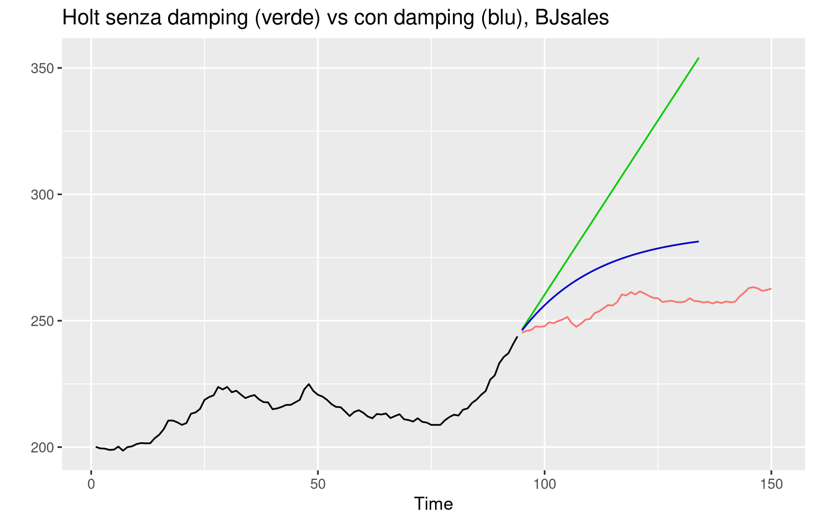
Confrontando le due curve si vede chiaramente l’effetto del damping: il modello non smorzato (verde) continua a proiettare una crescita sostenuta, mentre il modello smorzato (blu) è più conservativo e si avvicina di più a quanto poi accade davvero — pur senza cogliere perfettamente il rallentamento, perché la finestra scelta resta comunque una situazione difficile per un modello che vede solo il trend.
Il damping si applica anche al trend moltiplicativo, utile quando la crescita è meglio descritta in termini percentuali che in termini assoluti (si veda ancora una volta il parallelo con la decomposizione additiva/moltiplicativa del capitolo 9):
fit_holt_mult <-holt(log(AirPassengers_train), damped =FALSE, h =96, exponential =TRUE)autoplot(AirPassengers_train, ylab =NULL) +ggtitle("Holt moltiplicativo (non smorzato), serie AirPassengers") +autolayer(AirPassengers_test) +autolayer(exp(fit_holt_mult$mean)) +theme(legend.position ="none")
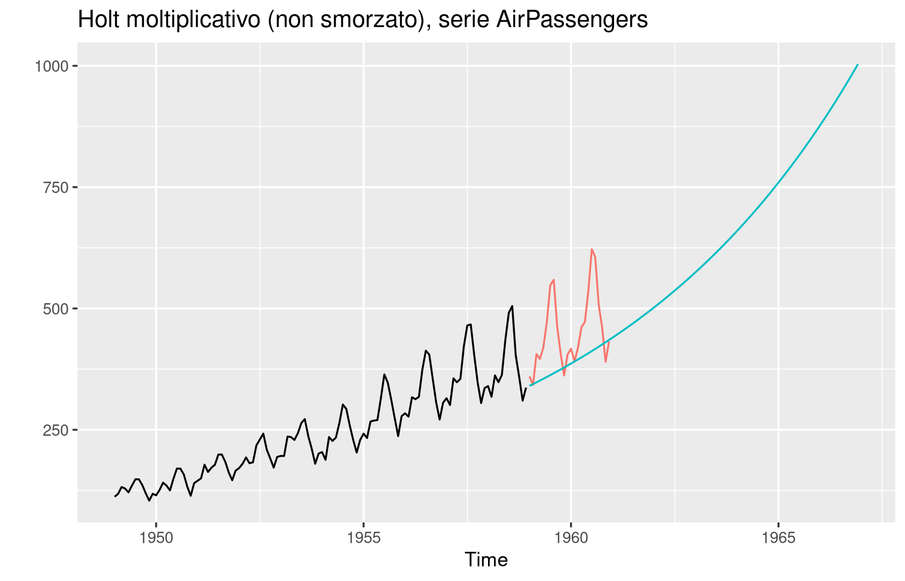
10.7.5 Limiti
WarningAttenzione
Un trend moltiplicativo senza damping è particolarmente rischioso: mentre un trend additivo non smorzato cresce al più linearmente, un trend moltiplicativo non smorzato produce una crescita esponenziale nelle previsioni, che a orizzonti anche moderati può diventare del tutto irrealistica. Se si sceglie un trend moltiplicativo, è quasi sempre prudente accompagnarlo con il damping.
10.7.6 Domande di comprensione
Perché la somma \(\phi+\phi^2+\cdots+\phi^h\) non diverge quando \(\phi<1\)? Collega la risposta all’analogia con \(\tfrac12+\tfrac14+\tfrac18+\cdots\).
Cosa succede al modello con trend smorzato quando \(\phi \to 0\)? E quando \(\phi \to 1\)? Individua i due modelli limite già visti nel capitolo.
Perché il damping applicato a un trend moltiplicativo è, se possibile, ancora più importante che applicato a un trend additivo?
Guardando il limite \(\ell_t + \frac{\phi}{1-\phi} b_t\), spiega perché un \(\phi\) più vicino a \(1\) porta la previsione asintotica a discostarsi maggiormente dal livello \(\ell_t\) rispetto a un \(\phi\) più piccolo.
10.8 Il modello di Holt-Winters: trend e stagionalità
10.8.1 Motivazione
Restava un ingrediente della decomposizione classica del capitolo 9 che i modelli visti finora non catturano affatto: la stagionalità. Il modello di Holt-Winters aggiunge una terza componente, \(s_t\), accanto a livello e trend, per rappresentare un pattern periodico.
10.8.2 Concetto e definizione
ImportantDefinizione
Il modello di Holt-Winters additivo (ampiezza stagionale approssimativamente costante) usa le variabili livello \(\ell_t\), trend \(b_t\), stagionalità \(s_t\), con parametri \(\alpha,\beta,\gamma \in [0,1]\) e periodo stagionale \(m\): \[
\begin{aligned}
\hat y_{t+h|t} &:= \ell_t + h\, b_t + s_{t+h-mk}, \qquad k=\left\lceil \frac{h}{m}\right\rceil & \text{(previsione)} \\
\ell_t &:= \alpha (y_t - s_{t-m}) + (1-\alpha)(\ell_{t-1} + b_{t-1}) & \text{(livello)} \\
b_t &:= \beta(\ell_t - \ell_{t-1}) + (1-\beta)\, b_{t-1} & \text{(trend)} \\
s_t &:= \gamma(y_t - \ell_{t-1} - b_{t-1}) + (1-\gamma)\, s_{t-m} & \text{(stagionalità)}
\end{aligned}
\] Notazione: ETS(A,A,A). Esistono anche varianti con stagionalità e/o trend moltiplicativi, e con damping del trend (non scriviamo qui tutte le equazioni).
TipUn errore frequente
L’equazione del trend di Holt-Winters non additivo/non smorzato è identica a quella di Holt semplice: non contiene il parametro \(\phi\). È facile confonderla con l’equazione del trend smorzato vista nella sezione precedente, che invece contiene \(\phi\, b_{t-1}\): le due formule si assomigliano moltissimo e differiscono solo per la presenza o assenza di quel singolo fattore. Prima di scrivere o leggere l’equazione del trend, conviene sempre chiedersi esplicitamente: “sto usando la variante con damping o senza?”
L’equazione del livello richiede un piccolo accorgimento in più rispetto a Holt: prima di aggiornare il livello, bisogna rimuovere la stagionalità dall’osservazione corrente (sottraendo \(s_{t-m}\), l’ultima stima disponibile della stagionalità per quella fase del ciclo), altrimenti il livello finirebbe per “assorbire” anche l’oscillazione periodica. Simmetricamente, l’equazione della stagionalità isola la componente stagionale sottraendo dall’osservazione corrente il livello e il trend appena stimati.
Il termine \(k=\lceil h/m \rceil\) nella previsione serve a “tornare indietro” di un numero intero di periodi fino a raggiungere un istante per cui la stagionalità è già stata stimata: se si prevede a \(h\) passi da \(t\) e il periodo è \(m\), si arretra di \(m, 2m, 3m,\ldots\) finché \(t+h-mk\) non cade tra gli istanti osservati.
10.8.3 Intuizione: stagionalità adattiva contro stagionalità fissa
Questo è probabilmente il punto concettuale più importante dell’intero capitolo, e vale la pena isolarlo con attenzione.
ImportantDefinizione
Nella decomposizione classica del capitolo 9 (funzioni decompose() o STL), la componente stagionale è una funzione periodica fissa: un’unica sequenza \(s_1,\ldots,s_m\) che si ripete identica in ogni ciclo, stimata una volta per tutte mediando su tutte le osservazioni disponibili per ciascuna fase del periodo. Nel modello di Holt-Winters, invece, la stagionalità \(s_t\) è adattiva: viene aggiornata a ogni passo con lo stesso meccanismo di smoothing esponenziale usato per il livello e il trend, come una media pesata tra la stagionalità stimata nel ciclo più recente e quella dei cicli precedenti.
Le conseguenze pratiche di questa differenza sono rilevanti. Se il pattern stagionale di una serie cambia lentamente nel tempo — pensiamo a un negozio in cui il picco di vendite natalizio diventa gradualmente più pronunciato di anno in anno, o a un pattern stagionale che si “sposta” leggermente — la decomposizione classica, con la sua stagionalità rigida, non può accorgersene: userebbe sempre la stessa forma stagionale per tutti gli anni. Holt-Winters, al contrario, è in grado di seguire questi cambiamenti lenti, perché a ogni ciclo la stima di \(s_t\) viene aggiornata mescolando informazione recente e passata. Il prezzo da pagare è un parametro aggiuntivo (\(\gamma\)) da stimare e, come sempre, un modello più flessibile è anche più difficile da interpretare a colpo d’occhio.
10.8.4 Esempio
Sulla serie nottem (senza trend, solo stagionalità) Holt-Winters additivo funziona bene:
fit_hw_nottem <-hw(nottem_train, damped =FALSE, h =24)autoplot(window(nottem_train, start =c(1935, 1)), ylab =NULL) +ggtitle("Holt-Winters additivo, serie nottem") +autolayer(nottem_test) +autolayer(fit_hw_nottem, PI =FALSE) +theme(legend.position ="none")
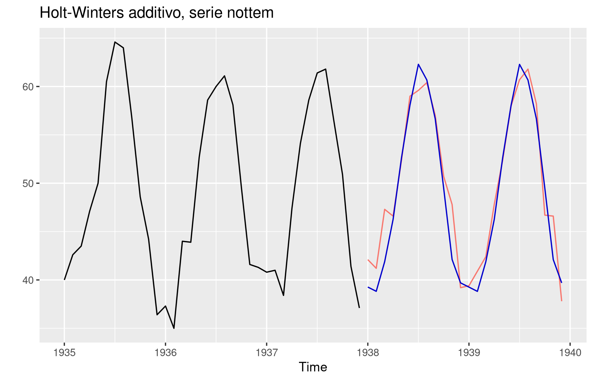
Su AirPassengers, che ha sia trend sia una stagionalità di ampiezza crescente nel tempo, il modello additivo mostra i suoi limiti:
fit_hw_air_add <-hw(AirPassengers_train, damped =FALSE, h =24)autoplot(window(AirPassengers_train, start =c(1956, 1)), ylab =NULL) +ggtitle("Holt-Winters additivo, serie AirPassengers") +autolayer(AirPassengers_test) +autolayer(fit_hw_air_add, PI =FALSE) +theme(legend.position ="none")
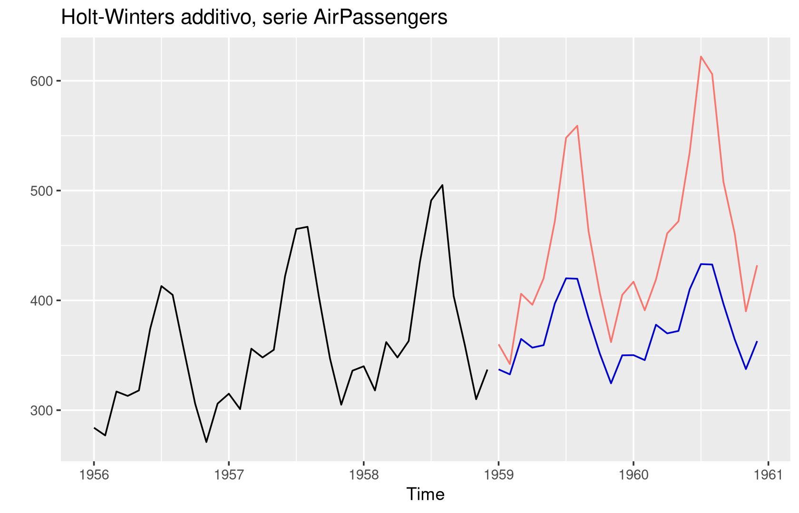
fit_hw_air_seasmult <-hw(AirPassengers_train, damped =FALSE, seasonal ="multiplicative", h =24)autoplot(window(AirPassengers_train, start =c(1956, 1)), ylab =NULL) +ggtitle("Holt-Winters con stagionalità moltiplicativa, serie AirPassengers") +autolayer(AirPassengers_test) +autolayer(fit_hw_air_seasmult, PI =FALSE) +theme(legend.position ="none")
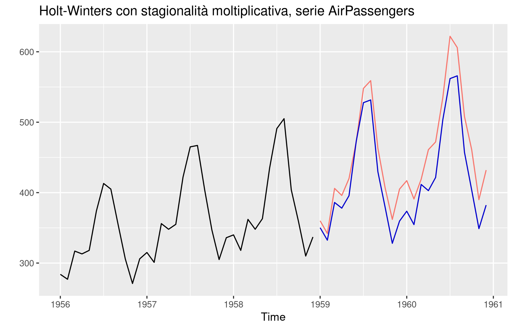
fit_hw_air_fullmult <-hw(AirPassengers_train, damped =FALSE,seasonal ="multiplicative", exponential =TRUE, h =24)autoplot(window(AirPassengers_train, start =c(1956, 1)), ylab =NULL) +ggtitle("Holt-Winters trend e stagionalità moltiplicativi, serie AirPassengers") +autolayer(AirPassengers_test) +autolayer(fit_hw_air_fullmult, PI =FALSE) +theme(legend.position ="none")
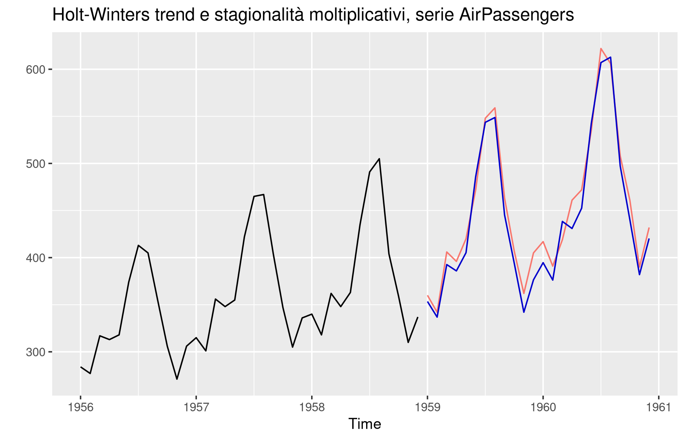
10.8.5 Interpretazione
Con equazioni tutte additive, Holt-Winters coglie un po’ di trend e un po’ di stagionalità, ma sottostima chiaramente l’ampiezza crescente delle oscillazioni: il modello, per costruzione, può solo sommare una stessa oscillazione di ampiezza pressoché costante, e finisce per rappresentare una specie di via di mezzo tra le ampiezze piccole viste all’inizio della serie e quelle grandi viste alla fine. Passando a stagionalità moltiplicativa, il modello cattura correttamente la crescita dell’ampiezza stagionale, ma il trend (ancora additivo) resta leggermente sottostimato. Solo rendendo anche il trend moltiplicativo il modello riesce a seguire bene sia il livello crescente sia l’ampiezza crescente delle oscillazioni.
10.8.6 Limiti
WarningAttenzione
Holt-Winters non può “scoprire da solo” se la struttura giusta è additiva o moltiplicativa: la scelta va fatta a priori dall’utilizzatore, osservando il grafico della serie (esattamente come nel capitolo 9, quando si doveva decidere tra decomposizione additiva e moltiplicativa guardando se l’ampiezza delle oscillazioni è costante o cresce con il livello). Se si specificano equazioni additive, il modello non potrà mai produrre una crescita moltiplicativa, anche se è quella vera nei dati — e viceversa.
10.8.7 Domande di comprensione
Spiega con parole tue la differenza tra stagionalità “fissa” e stagionalità “adattiva”. In quale situazione pratica preferiresti la seconda?
Perché, nell’equazione del livello di Holt-Winters, è necessario sottrarre \(s_{t-m}\) prima di applicare lo smoothing esponenziale?
Guardando una serie con ampiezza stagionale chiaramente crescente nel tempo, quale delle quattro varianti di Holt-Winters mostrate nell’esempio ti aspetteresti a priori essere la più adatta? Perché?
In che senso l’errore “copia-incolla” descritto nel box “Un errore frequente” sarebbe stato difficile da notare solo guardando i numeri delle previsioni, e più facile da notare confrontando esplicitamente le due equazioni?
10.9 La famiglia dei modelli ETS
10.9.1 Concetto
La notazione ETS classifica sistematicamente tutti i modelli visti (e molti altri) secondo tre componenti — Errore, Trend, Stagionalità — ciascuna delle quali può essere Additiva (A), Moltiplicativa (M) o assente/Nessuna (N); il trend può inoltre essere smorzato (indicato con il pedice \(d\)). Alcuni esempi che abbiamo già incontrato:
Sigla
Modello
ETS(A,N,N)
SES
ETS(A,A,N)
Holt
ETS(A,A\(_d\),N)
Holt con trend smorzato
ETS(A,A,A)
Holt-Winters additivo
ETS(M,A,M)
Holt-Winters con errore, trend additivi e stagionalità moltiplicativa
10.9.2 Interpretazione
Combinando le opzioni per le tre componenti (più l’opzione damping per il trend) si ottiene un numero considerevole di modelli — non tutte le combinazioni sono ammissibili o sensate, ma restano dell’ordine di una ventina di modelli distinti da poter confrontare su una data serie. Questo pone lo stesso problema già incontrato con KNN nel capitolo 4: con tanti modelli/iperparametri possibili, come scegliamo quello più adatto? Una possibilità è sempre la cross-validation (come per la scelta di \(k\) in KNN), ma richiede di riaddestrare ogni modello su più suddivisioni dei dati, ed è quindi più costosa. Una alternativa più economica, che vedremo nella prossima sezione, sono gli indicatori AIC/BIC, che non richiedono di rifittare nulla oltre al singolo fit già eseguito su tutti i dati disponibili.
TipNella pratica
Nonostante l’arrivo di metodi più sofisticati per le serie storiche (incluse le reti neurali), Holt-Winters “non è da buttare via”: modelli con pochi parametri come questi restano spesso competitivi anche rispetto a tecniche molto più complesse, non sempre in grado di ottenere miglioramenti significativi. È una lezione di carattere più generale sul rapporto tra complessità del modello e prestazioni, che vale la pena tenere a mente anche fuori dal contesto delle serie storiche.
10.9.3 Domande di comprensione
Quante combinazioni distinte (Errore × Trend × Stagionalità, ciascuna con 2-3 opzioni, più l’opzione damping) ti aspetti approssimativamente, senza contare quelle escluse per motivi di identificabilità?
Perché la cross-validation è “sempre possibile” per scegliere tra modelli ETS, ma AIC/BIC sono generalmente preferiti quando i modelli da confrontare sono numerosi?
Cosa significa, in pratica, dire che un modello con pochi parametri “resta competitivo” rispetto a metodi più sofisticati? Che tipo di evidenza servirebbe per sostenere questa affermazione in modo rigoroso?
10.10 SSE come stima di massima verosimiglianza
10.10.1 Concetto
Riscrivendo le equazioni di previsione in termini dei residui, la stima SSE \[
\theta_{SSE} = \arg\min_{\theta} \sum_{t=1}^T \varepsilon_t^2
\] diventa una stima di massima verosimiglianza (MLE) non appena si suppone che i residui siano i.i.d. gaussiani, \(\varepsilon_t \sim \mathcal N(0,\sigma^2)\). È esattamente lo stesso argomento incontrato per la regressione OLS nel capitolo 7: minimizzare la somma dei quadrati equivale a massimizzare la verosimiglianza gaussiana.
10.10.2 Interpretazione
Riconoscere questa equivalenza non è un semplice esercizio formale: apre la strada a tutto un arsenale di strumenti basati sulla verosimiglianza.
Intervalli di previsione parametrici: una volta ammessa l’ipotesi di gaussianità, si possono derivare formule esplicite per l’incertezza attorno alla previsione puntuale (li vedremo, senza entrare nei dettagli delle formule, nelle prossime sezioni).
Indicatori basati sulla verosimiglianza come AIC e BIC, che permettono di confrontare modelli con un numero diverso di parametri penalizzando la complessità.
Un accenno, non sviluppato nel corso, a possibili stime bayesiane: se si dispone di informazioni a priori sulla serie, si potrebbero incorporare in una stima bayesiana dei parametri. Il corso non tratta questo argomento nel dettaglio, ma vale la pena sapere che esiste.
10.10.3 Domande di comprensione
Perché il fatto che SSE coincida con MLE (sotto l’ipotesi gaussiana) è utile anche se, numericamente, il valore stimato \(\hat\theta\) è lo stesso indipendentemente da come lo si interpreta?
In che senso questa equivalenza è “la stessa storia” già raccontata per la regressione lineare? Cosa cambia e cosa resta identico?
10.11 Selezione del modello con AIC e BIC
10.11.1 Motivazione
Con una ventina di modelli ETS potenzialmente in gioco, confrontarli tutti tramite cross-validation (che richiede di riaddestrare ciascuno più volte) può diventare costoso. Gli indicatori di informazione offrono un’alternativa economica: si calcolano su un singolo fit fatto su tutti i dati disponibili.
10.11.2 Concetto
Dato un modello con \(p\) parametri stimato su \(T\) osservazioni, con verosimiglianza massimizzata \(\hat L\): \[
\text{AIC} = 2p - 2\log \hat L, \qquad \text{BIC} = p \log T - 2\log \hat L.
\] In entrambi i casi, un valore più piccolo indica un modello migliore: il primo termine penalizza il numero di parametri (modelli più complessi sono penalizzati di più), il secondo premia una buona verosimiglianza (un buon adattamento ai dati osservati). BIC penalizza la complessità più severamente di AIC quando \(T\) è grande, perché \(\log T > 2\) per \(T>7\).
WarningAttenzione
AIC e BIC sono calcolati sul training set, non tramite cross-validation: non simulano davvero cosa succederebbe su dati mai visti, ma stimano un compromesso tra bontà di adattamento e complessità basandosi su argomenti asintotici legati alla verosimiglianza. Sono quindi un’alternativa più economica alla cross-validation, non un sostituto perfettamente equivalente.
10.11.3 Esempio
Confrontiamo quattro modelli ETS sulla serie nottem: Holt (ETS(A,A,N)), Holt con damping (ETS(A,A\(_d\),N)), Holt-Winters additivo (ETS(A,A,A)) e un modello con errore moltiplicativo, trend additivo e stagionalità moltiplicativa (ETS(M,A,M)). Nota: la combinazione errore additivo + stagionalità moltiplicativa (ETS(A,A,M)) è esplicitamente vietata dalla funzione ets(), perché può generare previsioni numericamente instabili; per questo il quarto modello usa un errore moltiplicativo.
fit_ets_AAN <-ets(nottem_train, model ="AAN")fit_ets_AAdN <-ets(nottem_train, model ="AAN", damped =TRUE)fit_ets_AAA <-ets(nottem_train, model ="AAA")fit_ets_MAM <-ets(nottem_train, model ="MAM")data.frame(Modello =c("ETS(A,A,N)", "ETS(A,Ad,N)", "ETS(A,A,A)", "ETS(M,A,M)"),AIC =round(c(AIC(fit_ets_AAN), AIC(fit_ets_AAdN), AIC(fit_ets_AAA), AIC(fit_ets_MAM)), 1),BIC =round(c(BIC(fit_ets_AAN), BIC(fit_ets_AAdN), BIC(fit_ets_AAA), BIC(fit_ets_MAM)), 1))
I due modelli senza stagionalità (Holt e Holt con damping) mostrano valori di AIC/BIC molto peggiori (attorno a 1800) rispetto ai due modelli con stagionalità (che scendono intorno a 1550-1570, valori vicini tra loro). La spiegazione è illuminante: la finestra di training di nottem copre un periodo in cui la temperatura, guardata “grezza” senza tener conto del ciclo annuale, mostra un tratto di forte discesa. Un modello di Holt, che vede solo trend e non stagionalità, interpreta questo tratto come un vero trend decrescente e continua a estrapolarlo verso il basso — esattamente lo stesso tipo di errore già visto con BJsales, qui applicato a una serie che in realtà è ciclica, non tendente. I modelli con stagionalità, al contrario, riconoscono correttamente il ciclo annuale (caldo d’estate, freddo d’inverno) e non si lasciano ingannare da un singolo tratto di discesa temporanea.
NoteCome leggere il risultato
Un confronto AIC/BIC così netto (una differenza di oltre 200 punti) è un segnale forte: qui non stiamo discutendo una sfumatura, ma un errore di specificazione del modello vero e proprio (aver dimenticato la stagionalità). Quando la differenza tra modelli è invece di pochi punti, come tra i due modelli stagionali, il confronto va preso con più cautela: modelli vicini in AIC/BIC spesso producono previsioni molto simili, e la scelta tra loro conta relativamente poco.
10.11.5 Domande di comprensione
Perché AIC e BIC penalizzano il numero di parametri? Cosa succederebbe se si scegliesse semplicemente il modello con la verosimiglianza più alta, senza penalità?
Nell’esempio su nottem, perché il modello di Holt (senza stagionalità) produce un AIC/BIC così peggiore rispetto ai modelli stagionali, anche se ha meno parametri da stimare?
Quando i valori di AIC/BIC di due modelli sono molto vicini tra loro, cosa dovresti concludere (e cosa NON dovresti concludere) sulla loro relativa qualità?
10.12 Intervalli di previsione parametrici
10.12.1 Concetto
L’interpretazione di SSE come MLE sotto residui gaussiani permette di derivare, per ciascun modello ETS, un intervallo di previsione attorno a \(\hat y_{t+h|t}\), a un livello di confidenza scelto (tipicamente 80% o 95%). Il corso non richiede di conoscere le formule esplicite (disponibili nei testi di riferimento consigliati); ci concentriamo su come leggerle e interpretarle.
10.12.2 Esempio
fit_holt_damped_pi <-holt(bj_train, damped =TRUE, h =40, level =90, alpha =NULL, beta =NULL)autoplot(bj_train, ylab =NULL) +ggtitle("Holt con trend smorzato, intervallo di previsione al 90%, BJsales") +autolayer(fit_holt_damped_pi, PI =TRUE, colour ="blue", alpha =0.8) +autolayer(bj_test) +theme(legend.position ="none")
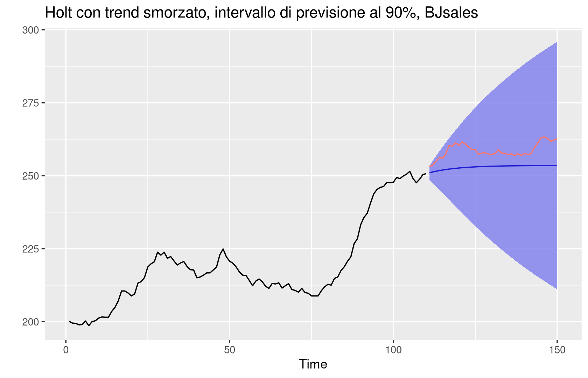
fit_hw_air_pi <-hw(AirPassengers_train, damped =FALSE, seasonal ="multiplicative",exponential =TRUE, level =90, h =24)autoplot(window(AirPassengers_train, start =c(1958, 1)), ylab =NULL) +ggtitle("Holt-Winters moltiplicativo, intervallo di previsione al 90%, AirPassengers") +autolayer(fit_hw_air_pi, PI =TRUE, alpha =0.8) +autolayer(AirPassengers_test) +theme(legend.position ="none")
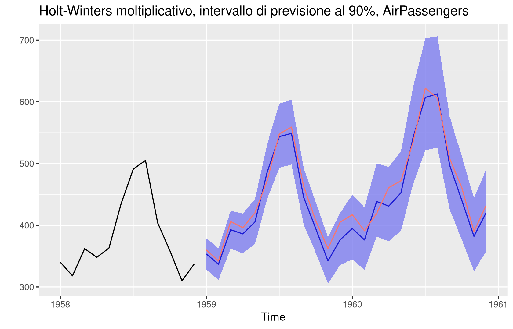
10.12.3 Interpretazione
NoteCome leggere il risultato
Ci sono due modi standard di interpretare un intervallo di previsione al 95%.
Lettura frequentista: se potessimo ricampionare molte repliche indipendenti della stessa serie storica (con lo stesso processo generatore, ma realizzazioni diverse del rumore), circa il 95% di queste repliche produrrebbe un valore che cade dentro la banda disegnata.
Lettura bayesiana: dato quello che abbiamo effettivamente osservato, la probabilità che il valore vero cada dentro la banda è 95%.
Le due letture non sono equivalenti in generale, ma nel contesto delle serie storiche vale la pena di sottolineare un punto: nella pratica di solito abbiamo una sola serie storica, non possiamo davvero “ricampionarla” tante volte come richiederebbe in senso stretto l’interpretazione frequentista. Per questo motivo, in questo contesto specifico, la lettura bayesiana (“con probabilità 95% il valore vero è in questa banda, dato quello che abbiamo osservato”) è spesso più naturale e più onesta rispetto a quella frequentista — una preferenza personale del docente, non una posizione universalmente condivisa in statistica, ma un punto di vista utile da tenere presente quando si comunicano questi intervalli.
10.12.4 Domande di comprensione
Prova a spiegare a un non esperto, con parole semplici, la differenza tra la lettura frequentista e quella bayesiana di un intervallo di previsione al 95%.
Perché la difficoltà di “ricampionare” una serie storica rende la lettura frequentista meno naturale in questo contesto, rispetto per esempio a un esperimento clinico ripetibile su tanti pazienti diversi?
Un intervallo di previsione all’80% è più stretto o più largo di uno al 95%? Cosa “guadagni” e cosa “perdi” scegliendo un livello di confidenza più basso?
10.13 Verifica della gaussianità dei residui
10.13.1 Motivazione
Gli intervalli parametrici appena visti si appoggiano interamente sull’ipotesi che i residui siano i.i.d. gaussiani e omoschedastici (varianza costante nel tempo) — esattamente la stessa ipotesi che sta dietro alla diagnostica dei residui in regressione (capitoli 7-8). Vale quindi la pena chiedersi quanto questa ipotesi sia ragionevole per un dato modello.
10.13.2 Concetto
Non è mai possibile “dimostrare” che dei dati reali siano esattamente gaussiani; si può solo raccogliere evidenza a favore o contro questa ipotesi, con metodi:
qualitativi: istogramma dei residui con sovrapposta la densità gaussiana stimata (dovrebbe assomigliare a una curva a campana); QQ-plot, che confronta i quantili osservati con quelli teorici di una gaussiana (dovrebbero disporsi su una retta);
quantitativi (test di gaussianità): si mette alla prova l’ipotesi nulla \(H_0\): i residui sono gaussiani contro l’alternativa \(H_1\): i residui non sono gaussiani. Un p-value basso (per esempio \(<0.05\)) porta a rifiutare\(H_0\). Test comuni sono Shapiro-Wilk (basato sui momenti) e Jarque-Bera (basato sulla funzione di ripartizione empirica).
NoteCome leggere il risultato
Attenzione al linguaggio: un p-value alto non dimostra che i residui siano gaussiani. Significa soltanto che l’evidenza a disposizione non è sufficiente per rifiutare questa ipotesi. La formulazione corretta è “non rifiutiamo \(H_0\)”, non “accettiamo \(H_0\)” — anche se nel parlato comune (e a volte anche a lezione) si sente spesso dire informalmente “accettiamo che siano gaussiani”. È una precisazione metodologica piccola ma importante, che vale per qualunque test di ipotesi, non solo per la gaussianità dei residui.
10.13.3 Esempio
library(tseries)library(patchwork)fit_holt_damped_res <-holt(BJsales, h =10, damped =TRUE, alpha =NULL, beta =NULL)res_bj <-residuals(fit_holt_damped_res)p1 <-ggplot(data.frame(res_bj), aes(x = res_bj)) +geom_histogram(aes(y =after_stat(density)), bins =15, fill ="lightblue", color ="black") +stat_function(fun = dnorm, args =list(mean =mean(res_bj), sd =sd(res_bj)), color ="red") +ggtitle("Istogramma dei residui, Holt damped, BJsales") +xlab("Residui") +ylab("Densità")p2 <-ggplot(data.frame(res_bj), aes(sample = res_bj)) +stat_qq() +stat_qq_line(color ="red") +ggtitle("QQ-plot dei residui") +xlab("Quantili teorici") +ylab("Quantili campionari")p1 / p2
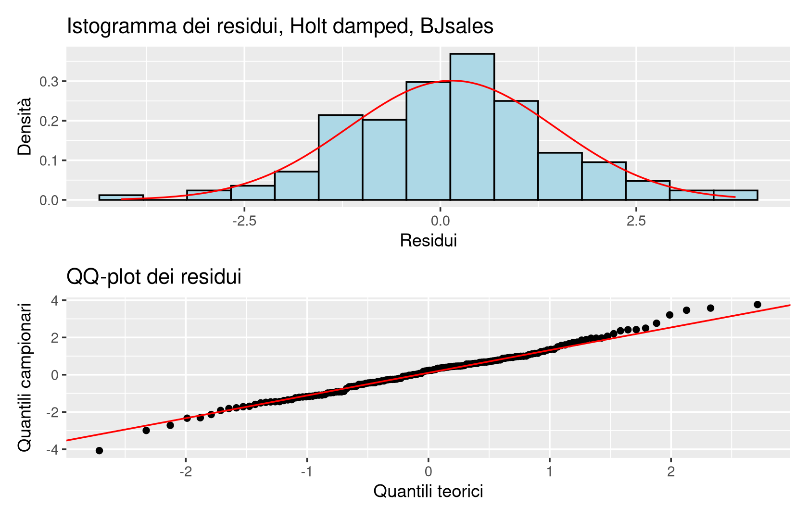
shapiro.test(res_bj)$p.value
[1] 0.6730492
jarque.bera.test(res_bj)$p.value
[1] 0.5389997
I residui di questo modello appaiono ben allineati con una gaussiana, con p-value alti per entrambi i test: non c’è evidenza contro l’ipotesi di normalità.
Consideriamo invece i residui del modello Holt-Winters moltiplicativo su AirPassengers:
In questo secondo caso l’istogramma appare leggermente asimmetrico: la coda sinistra (residui molto negativi) è più pesante di quella destra, e il picco della distribuzione non è perfettamente allineato con lo zero. Nel QQ-plot si nota lo stesso fenomeno: i punti seguono bene la retta teorica sul lato destro, ma se ne discostano sistematicamente sul lato sinistro. Numericamente, il test di Shapiro-Wilk restituisce un p-value attorno a \(0.025\) (sotto la soglia 0.05: si rifiuterebbe \(H_0\)), mentre Jarque-Bera restituisce circa \(0.06\) (sopra la soglia, di poco). I due test non concordano perfettamente — cosa che può succedere, dato che si basano su statistiche diverse — ma il quadro complessivo (istogramma, qqplot, ed entrambi i p-value non altissimi) suggerisce cautela nell’affidarsi ciecamente all’ipotesi di gaussianità per questo modello.
10.13.5 Limiti
WarningAttenzione
Un test di gaussianità non “dimostra” che i residui siano davvero gaussiani, e un singolo p-value borderline non va sovra-interpretato. Inoltre, “non rifiutare \(H_0\)” non equivale ad “accettare \(H_0\)”: con pochi dati un test può semplicemente non avere abbastanza potenza per rilevare un allontanamento reale dalla gaussianità. Quando l’ipotesi appare dubbia, la conseguenza pratica più utile non è scartare il modello, ma essere più cauti nell’uso degli intervalli parametrici, ed eventualmente ricorrere ad alternative come il bootstrap, discusso nella prossima sezione.
10.13.6 Domande di comprensione
Perché un p-value alto non permette di concludere che i residui siano “sicuramente” gaussiani?
Nell’esempio con AirPassengers, cosa indicano, guardando il QQ-plot, i punti che si discostano dalla retta sul lato sinistro?
Se i due test di gaussianità (Shapiro-Wilk e Jarque-Bera) danno risposte diverse riguardo al rifiuto di \(H_0\) a soglia 0.05, come dovresti comportarti nella pratica?
10.14 Intervalli di previsione bootstrap
10.14.1 Motivazione
Quando i residui non sembrano gaussiani (o omoschedastici), gli intervalli parametrici perdono parte della loro giustificazione teorica. Un’alternativa, già incontrata a proposito dell’incertezza sui coefficienti OLS nel capitolo 7, è il bootstrap: invece di appoggiarsi a una formula derivata sotto un’assunzione distribuzionale, si costruisce empiricamente la distribuzione della quantità di interesse ricampionando i dati.
10.14.2 Concetto
WarningAttenzione — il caveat più importante di questa sezione
Per una serie storica non si può fare bootstrap ricampionando a caso gli istanti temporali della serie originale, come si farebbe con osservazioni indipendenti in regressione: mescolando a caso i tempi si distruggerebbe irrimediabilmente la struttura di trend e stagionalità che il modello ha appena catturato. Il bootstrap per le serie storiche si applica esclusivamente ai residui, che per costruzione — se il modello è ragionevole — non dovrebbero più contenere struttura temporale sistematica (né trend, né stagionalità): sono, nell’idea, la parte “rumore” rimasta dopo aver tolto tutto ciò che il modello sa spiegare. Questo requisito implicito, che i residui di un buon modello non abbiano più struttura riconoscibile, è un primo assaggio di un concetto che formalizzeremo nel capitolo 11: la stazionarietà.
Il procedimento, nella sua versione più semplice (usando la previsione naive \(\hat y_{t+1|t}=y_t\) come esempio didattico):
Calcola i residui osservati \(\varepsilon_t = y_t - \hat y_{t|t-1}\) per \(t=1,\ldots,T\).
Per costruire una previsione bootstrap a orizzonte \(h\): campiona (con ripetizione) \(h\) residui dall’insieme osservato, \(\varepsilon^*_{T+1},\ldots,\varepsilon^*_{T+h}\).
Ripeti i passi 2-3 un numero \(B\) (grande) di volte, ottenendo \(B\) traiettorie simulate.
L’intervallo di previsione a un dato livello si ottiene dai quantili empirici delle traiettorie simulate, ad ogni orizzonte \(h\).
Lo stesso principio si applica, con l’ovvia complicazione algebrica, a modelli più ricchi (Holt, Holt-Winters, ETS generali): cambia solo la formula usata per costruire \(\hat y^*_{T+s|T}\) a partire dal residuo campionato, ma la logica di campionare solo i residui resta identica.
TipCollegamento con il bootstrap visto in regressione
Ricorda il bootstrap “completo” (bagging) incontrato a proposito della regressione: lì, ogni replica bootstrap richiedeva di ricampionare l’intero dataset e riaddestrare il modello da capo su ciascun campione. Il bootstrap sui soli residui, invece, riutilizza un unico fit del modello (fatto una volta sola su tutti i dati) e ricampiona solo gli errori: è quindi molto più economico dal punto di vista computazionale. È lo stesso compromesso costo/beneficio discusso a proposito del bagging: più repliche complete danno stime più accurate ma costano di più; qui, ricampionando solo i residui, si ottiene un’approssimazione ragionevole dell’incertezza a un costo molto più basso.
10.14.3 Esempio
set.seed(123)model_aaa <-ets(nottem_train, model ="AAA")pred_boot <-forecast(model_aaa, h =24, bootstrap =TRUE, times =1000, level =95)autoplot(window(nottem_train, start =c(1935, 1)), ylab ="temperatura") +ggtitle("Intervalli di previsione bootstrap al 95%, ETS(A,A,A), nottem") +autolayer(pred_boot, alpha =0.8) +autolayer(nottem_test, series ="osservato") +scale_colour_manual(values =c("osservato"="red")) +theme(legend.position ="none")
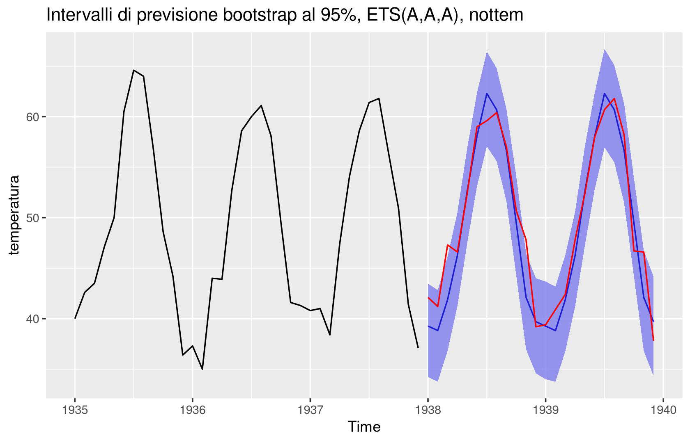
Confrontiamo ora, sullo stesso tipo di modello, intervalli bootstrap e parametrici fianco a fianco:
set.seed(123)model_ana <-ets(nottem_train, model ="ANA")pred_boot2 <-forecast(model_ana, h =24, bootstrap =TRUE, times =5000, level =95)pred_param2 <-forecast(model_ana, h =24, bootstrap =FALSE, PI =TRUE, level =95)autoplot(window(nottem_train, start =c(1937, 1)), PI =FALSE, ylab ="temperatura") +ggtitle("Bootstrap (blu) e parametrici (rosso), ETS(A,N,A), nottem") +autolayer(pred_param2, alpha =0.8, colour ="red") +autolayer(pred_boot2, colour ="blue", alpha =0.8) +autolayer(nottem_test, series ="osservato") +scale_colour_manual(values =c("osservato"="red")) +theme(legend.position ="none")
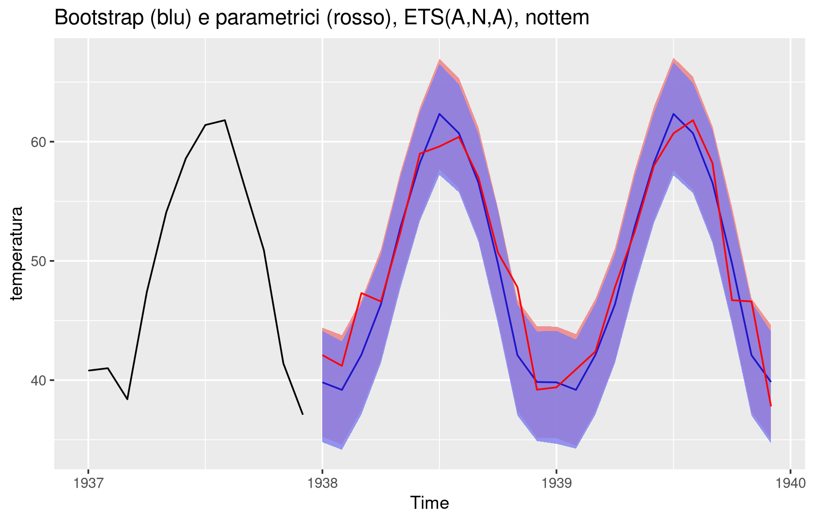
E lo stesso confronto su una serie con residui più lontani dalla gaussianità:
set.seed(123)model_mnm <-ets(AirPassengers_train, model ="MNM")pred_boot3 <-forecast(model_mnm, h =24, bootstrap =TRUE, times =5000, level =95)pred_param3 <-forecast(model_mnm, h =24, bootstrap =FALSE, PI =TRUE, level =95)autoplot(window(AirPassengers_train, start =c(1956, 1)), ylab =NULL) +ggtitle("Bootstrap (blu) e parametrici (rosso), ETS(M,N,M), AirPassengers") +autolayer(pred_param3, alpha =0.8, colour ="red") +autolayer(pred_boot3, colour ="blue", alpha =0.8) +autolayer(AirPassengers_test, series ="osservato") +scale_colour_manual(values =c("osservato"="red")) +theme(legend.position ="none")
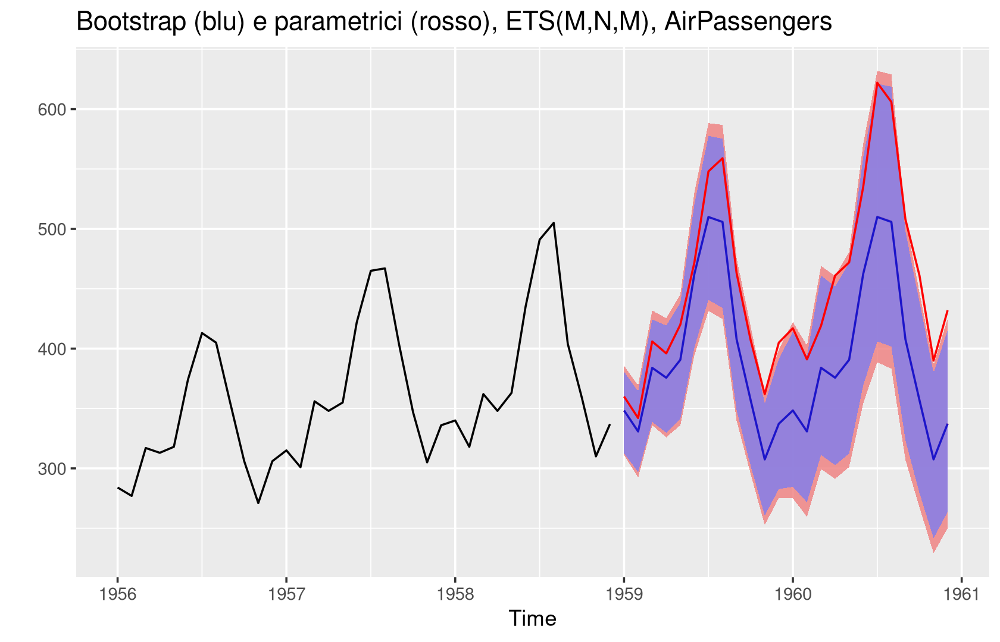
10.14.4 Interpretazione
Nel primo confronto (modello vicino alla gaussianità), gli intervalli bootstrap e parametrici risultano molto simili: è il comportamento atteso, perché quando l’ipotesi di gaussianità è ragionevole entrambi gli approcci stimano essenzialmente la stessa cosa, solo con strumenti diversi. Nel secondo confronto, dove i residui sono più lontani dalla gaussianità, si osservano piccole differenze sistematiche — in alcuni casi gli intervalli parametrici tendono a essere leggermente più larghi (sovrastimano l’incertezza), quelli bootstrap leggermente più stretti — ma restano comunque abbastanza vicini tra loro. Il bootstrap sui residui “si comporta ragionevolmente bene” anche fuori dall’ipotesi di gaussianità stretta, pur essendo “un po’ meno garantito” in senso teorico rispetto al caso in cui l’ipotesi di normalità è davvero soddisfatta.
NoteCome leggere il risultato
Nella pratica, la scelta tra intervalli parametrici e bootstrap segue una semplice regola pratica: se la diagnostica di gaussianità (sezione precedente) non dà motivo di preoccupazione, gli intervalli parametrici sono più semplici da ottenere (basta un’opzione nella funzione R) e teoricamente ben fondati. Se invece la diagnostica solleva dei dubbi, il bootstrap sui residui è un’alternativa più robusta, a un costo computazionale comunque contenuto.
10.14.5 Domande di comprensione
Perché non è corretto fare bootstrap ricampionando direttamente gli istanti della serie storica originale? Cosa andrebbe perso in questo modo?
In che senso il bootstrap sui soli residui è “una via di mezzo” tra non fare nulla (solo previsione puntuale) e il bootstrap completo/bagging visto in regressione?
Se i residui di un modello mostrassero ancora una chiara struttura stagionale, cosa ti direbbe questo fatto sulla qualità del modello sottostante, al di là della questione degli intervalli di previsione?
Nei due confronti bootstrap/parametrico dell’esempio, in quale dei due ti aspetteresti una maggiore discrepanza tra i due tipi di intervallo, sulla base di quanto discusso nella sezione sulla gaussianità dei residui?
10.15 Cosa ricordare
Un modello di previsione parametrico \(f(t;\theta)\) richiede tre ingredienti: stima di \(\hat\theta\) dai dati, previsione puntuale \(f(T+h;\hat\theta)\), e un intervallo di previsione che quantifichi l’incertezza.
SES ha un solo parametro \(\alpha\) e produce una previsione costante rispetto a \(h\): è una media pesata delle osservazioni passate con decadimento geometrico; \(\alpha=1\) coincide con il naive, \(\alpha=0\) con l’ignorare tutto tranne la prima osservazione.
La notazione ETS riscrive ogni modello in termini di stato (livello, eventualmente trend e stagionalità) ed errore, e permette una classificazione sistematica (Error/Trend/Seasonal, ciascuno A/M/N, più il damping).
La stima dei parametri avviene sempre per minimi quadrati (SSE), ma senza formula chiusa: serve ottimizzazione numerica, perché la previsione non è lineare nei parametri.
Holt aggiunge un trend lineare, ma tende a estrapolarlo indefinitamente: è “eccitabile” e rischia di sovrastimare fortemente a orizzonti lunghi. Il trend smorzato (parametro \(\phi\)) corregge questo difetto facendo convergere la previsione a un valore asintotico.
Holt-Winters aggiunge una stagionalità che, a differenza della decomposizione classica del capitolo 9, è adattiva: si aggiorna nel tempo tramite lo stesso meccanismo di smoothing esponenziale.
Sotto l’ipotesi di residui i.i.d. gaussiani, SSE coincide con MLE: questo apre la strada a intervalli parametrici e agli indicatori AIC/BIC per la selezione del modello, più economici della cross-validation.
La gaussianità dei residui va verificata (istogramma, QQ-plot, test come Shapiro-Wilk e Jarque-Bera), ma nessun test la “dimostra”: un p-value alto significa solo assenza di evidenza contraria.
Quando la gaussianità è dubbia, il bootstrap sui soli residui (mai sull’intera serie) offre un’alternativa più robusta agli intervalli parametrici, a un costo computazionale contenuto rispetto al bootstrap completo.
10.16 Domande di riepilogo
Elenca in ordine di complessità crescente i modelli visti in questo capitolo (SES, Holt, Holt damped, Holt-Winters) e per ciascuno indica quale “ingrediente” mancante nel modello precedente viene aggiunto.
Spiega perché nessuno di questi modelli ammette una formula chiusa per la stima dei parametri, a differenza della regressione lineare semplice.
Un modello di Holt, addestrato su una serie che include un breve periodo di crescita anomala seguito da un ritorno alla normalità, produrrà previsioni realistiche o rischia di essere fuorviato? Collega la risposta al fenomeno osservato con BJsales.
Spiega la differenza tra stagionalità fissa (decomposizione classica, capitolo 9) e stagionalità adattiva (Holt-Winters), e indica una situazione concreta in cui preferiresti l’una o l’altra.
Perché AIC/BIC sono spesso preferiti alla cross-validation quando si devono confrontare molti modelli ETS? Quale compromesso stanno facendo?
Un p-value di un test di gaussianità pari a 0.5 e uno pari a 0.04: come cambia la tua fiducia nell’uso di intervalli di previsione parametrici nei due casi?
Perché il bootstrap per le serie storiche va applicato ai residui e non alla serie grezza? Collega la risposta al concetto di bootstrap incontrato in altri capitoli.
Nella tua opinione, quali argomenti giustificano la preferenza (dichiarata a lezione) per una lettura bayesiana degli intervalli di previsione nel contesto delle serie storiche, rispetto a una lettura strettamente frequentista?
10.17 Laboratorio R: leggere i dati, non programmare
In questo capitolo abbiamo usato sistematicamente le funzioni del pacchetto forecast (ses, holt, hw, ets, forecast, autoplot, autolayer), insieme a shapiro.test (base R) e jarque.bera.test (pacchetto tseries) per la diagnostica dei residui. Come sempre, l’obiettivo di questi esercizi non è scrivere codice, ma eseguirlo, confrontare gli output e interpretarli.
10.17.1 Esercizio 1 — SES, Holt e Holt-Winters sulla stessa serie: co2
Il dataset co2 (base R) contiene le concentrazioni mensili di CO\(_2\) atmosferica misurate a Mauna Loa, con un trend crescente molto marcato e una stagionalità regolare di ampiezza pressoché costante — una serie diversa da tutte quelle viste finora nel capitolo.
co2_train <-window(co2, end =c(1994, 12))co2_test <-window(co2, start =c(1995, 1), end =c(1997, 12))autoplot(co2_train, ylab ="ppm") +ggtitle("Concentrazione di CO2 atmosferica, serie co2 (training)") +autolayer(co2_test)
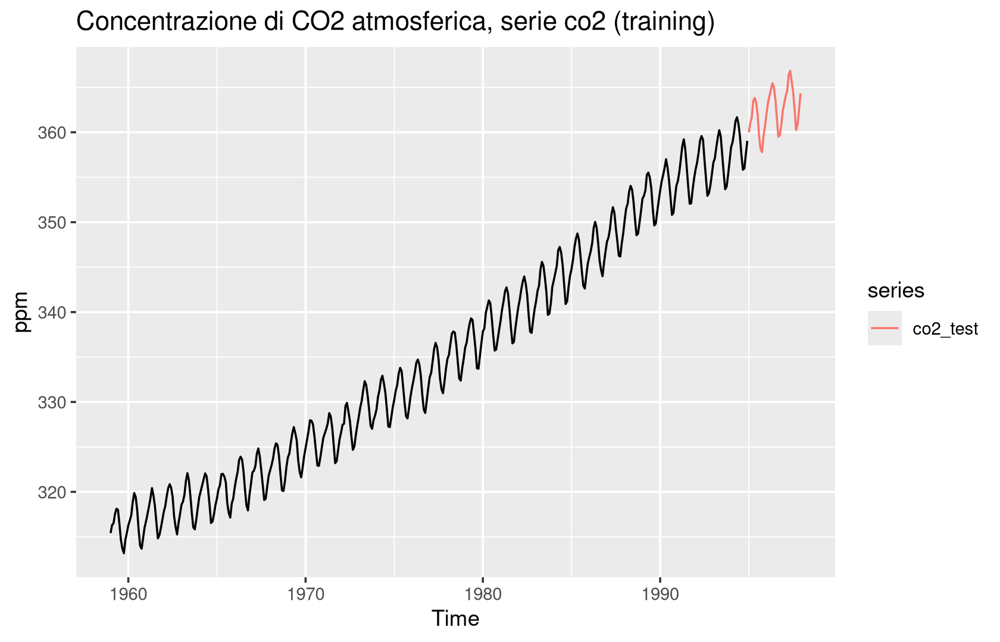
fit_ses_co2 <-ses(co2_train, h =36)fit_holt_co2 <-holt(co2_train, h =36)fit_holtd_co2 <-holt(co2_train, damped =TRUE, h =36)fit_hw_co2 <-hw(co2_train, seasonal ="additive", h =36)data.frame(Modello =c("SES", "Holt", "Holt damped", "Holt-Winters additivo"),AIC =round(c(fit_ses_co2$model$aic, fit_holt_co2$model$aic, fit_holtd_co2$model$aic, fit_hw_co2$model$aic), 1))
Modello AIC
1 SES 2783.7
2 Holt 2556.3
3 Holt damped 2504.0
4 Holt-Winters additivo 1572.2
Prima di guardare la tabella: quale dei quattro modelli ti aspetti abbia l’AIC migliore (più basso) su questa serie, e perché?
La tabella conferma o smentisce la tua previsione? In caso di sorpresa, prova a spiegarla guardando il grafico della serie.
Prova a rifare il confronto lasciando che sia ets() a scegliere automaticamente il modello (ets(co2_train), senza specificare model=): quale sigla ETS sceglie? Coincide con il modello che avevi selezionato manualmente tramite AIC?
Genera le previsioni a 36 mesi del modello scelto da ets() e sovrapponile a co2_test. Le previsioni seguono bene sia il trend sia la stagionalità osservati nel test set?
10.17.2 Esercizio 2 — Confronto tra selezione manuale e automatica su AirPassengers
Nel capitolo abbiamo scelto “a mano” diverse varianti di Holt-Winters su AirPassengers (additiva, stagionalità moltiplicativa, tutto moltiplicativo). Esegui ora ets(AirPassengers_train) lasciando che la funzione scelga automaticamente errore, trend e stagionalità.
Quale sigla ETS ha scelto ets()? È compatibile con quanto avevamo osservato “a occhio” nel capitolo (serie con trend e stagionalità di ampiezza crescente)?
Confronta l’AIC di questo modello automatico con quelli calcolati manualmente nella sezione sulla selezione del modello (adattando il codice a AirPassengers_train se necessario). Il modello automatico è competitivo?
Quali vantaggi e quali rischi vedi nell’affidarsi a una selezione completamente automatica del modello, invece di ispezionare a mano il grafico della serie come abbiamo fatto nel capitolo?
10.17.3 Esercizio 3 — Diagnostica dei residui e scelta dell’intervallo
Riprendi il modello Holt-Winters additivo stimato su co2_train (Esercizio 1).
Sulla base dei p-value ottenuti, useresti un intervallo di previsione parametrico o preferiresti un intervallo bootstrap per questo modello? Motiva la scelta.
Costruisci un intervallo bootstrap con forecast(fit_hw_co2, h = 36, bootstrap = TRUE, times = 1000, level = 95) (ricorda set.seed() per la riproducibilità) e confrontalo visivamente con l’intervallo parametrico di default. Sono simili o diversi? Il risultato è coerente con la diagnostica dei residui del punto precedente?